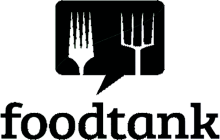

A seed company dedicated to deliciousness
We are a seed company built on collaboration between chefs, farmers and plant breeders. Working together, we create, trial and distribute delicious plant varieties to make an impact in the soil and at the table.
Learn more about usEvery variety in our catalog has been tested (and tasted) in the field and kitchen, improving the recipe long before an ingredient reaches the plate.
More about our seedsAll of our seeds are certified organic and produced in the US.
01. Badger flame beet
02. Robins kigonut squash
03. Habanada pepper
04. 7082 cucumber (experimental)
They talk about our revolutionary seeds
Could chefs create a demand for new varieties that were more experimental and interesting and diverse, more nutrient-dense and more thoroughly delicious, from root to stem to leaf?
Seed-to-Farm-to-Table: Dan Barber Introduces His New Enterprise, Row 7
Is 'seed to table' the next big food trend? One top chef hopes so.